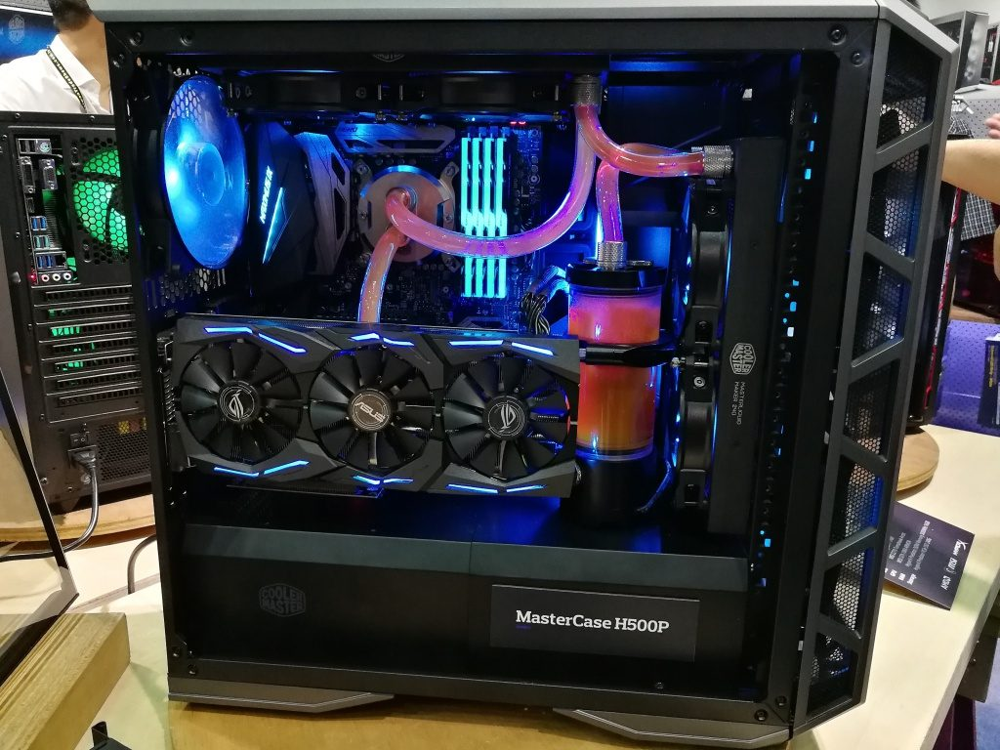
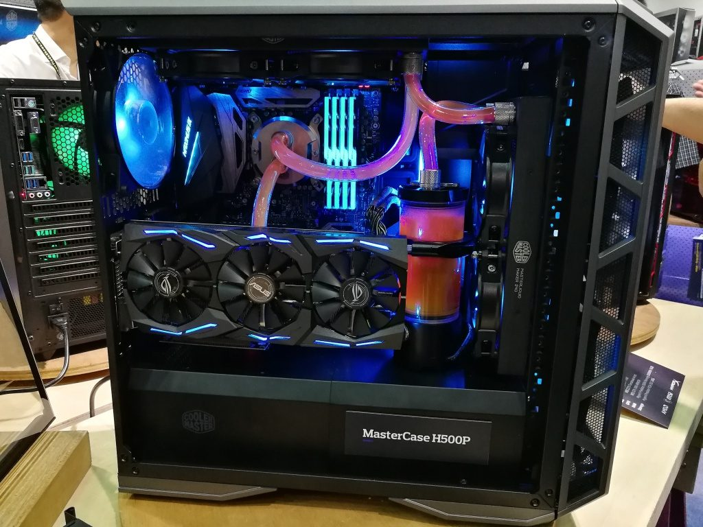

Carrera
- Ingenieria en Software
- Perfil de Egreso
- Conocimientos sobre:
- Metodologías y técnicas para el desarrollo de software a pequeña y gran escala, tales como desarrollo de requerimientos, interacción humano-computadora, diseño, construcción, evolución, pruebas y aquellos relacionados con la administración, como el aseguramiento de la calidad y la administración de proyectos.
- Las ciencias computacionales, que le permitan la aplicación viable de algoritmos, estructuras de datos y lenguajes de programación en el desarrollo de software.
- Las herramientas para la especificación y el modelado de sistemas de software, así como para la evaluación de los procesos y productos de software para su mejora.
- Administración y optimización de tiempo y costo de los recursos involucrados en el desarrollo de software.
- El entorno social para describir los factores sociales, políticos, ecológicos y éticos relacionados con el desarrollo tecnológico y el desempeño profesional.
- Las áreas de investigación relacionadas con la Ingeniería de Software.
- Habilidades para:
- Trabajar como parte de un equipo en el desarrollo y evolución de productos de software.
- Explicar el proceso para determinar las necesidades del cliente y traducirlos a requisitos de software.
- Reconciliar objetivos en conflicto, considerando compromisos con las limitaciones de costo, tiempo, conocimiento, sistemas existentes y de las organizaciones involucradas.
- Diseñar soluciones apropiadas en una o más áreas de concentración, usando enfoques de ingeniería que integren temas éticos, sociales, legales y económicos.
- Entender y aplicar teorías, modelos y técnicas que provean una base para el diseño, desarrollo, verificación e implantación del software.
- Negociar y trabajar profesionalmente, liderar cuando sea necesario y comunicarse efectivamente con los interesados en un ambiente de Ingeniería de Software.
- Materias
- Álgebra.
- Algorítmica y Complejidad.
- Análisis matemático.
- Arquitectura de computadores.
- Arquitectura y diseño software.
- Aspectos éticos y sociales.
- Aspectos legales y profesionales.
- Bases de Datos
- Bases de datos avanzadas.
- Cálculo.
- Calidad del software.
- Compresión y Recuperación de Información Multimedia.
- Computación.
- Computación Ubicua e Inteligencia Ambiental.
- Computadores.
- Construcción y diseño de interfaces gráficas de usuario.
- Creación de Empresas y Gestión Emprendedora
- Criptografía y Teoría de Códigos.
- Diseño y Desarrollo de Sistemas de Información
- English.
- Estadística.
- Estructura de Computadores.
- Estructura de Datos y Algoritmos.
- Estructura de datos.
- Ética, Legislación y Profesión.
- Evolución y mantenimiento del software.
- Fundamentos de Computadores.
- Fundamentos de economía y empresa.
- Fundamentos de Ingeniería de Software.
- Fundamentos de Programación.
- Fundamentos de Redes.
- Fundamentos de seguridad.
- Fundamentos de Sistemas Multimedia.
- Fundamentos Físicos de la Informática.
- Gestión de proyectos y del riesgo.
- Gestión de recursos digitales.
- Informática.
- Ingeniería de computadores.
- Ingeniería de requisitos y modelado.
- Ingeniería del proceso software y construcción.
- Ingeniería del software.
- Ingeniería Informática.
- Inteligencia artificial.
- Introducción a la programación de videojuegos
- Investigación Operativa.
- Lenguajes formales.
- Lógica.
- Lógica y Matemáticas Discretas.
- Matemáticas.
- Metodología de Programación.
- Organización y Gestión de Empresas.
- Paralelismo.
- Probabilidad y estadística.
- Programación.
- Programación concurrente y avanzada.
- Programación orientada a objetos.
- Redes.
- Redes de computadores.
- Robótica.
- Seguridad de la información.
- Sistemas Concurrentes y Distribuidos.
- Sistemas de información.
- Sistemas multimedia.
- Sistemas Operativos.
- Software Libre y Desarrollo Social.
- Tecnología y Organización de Computadores
- Tecnologías de la información.
- Teoría de Autómatas y lenguajes formales.
- Traductores de lenguajes de programación.
- Verificación y validación.
Un Ingeniero de Software es un profesional que se encarga de la creación de software de calidad, aplicando conocimiento científico y estadístico. El trabajo del Ingeniero de Software consiste en analizar, diseñar, programar, probar y mantener sistemas informáticos y de software con el propósito de resolver problemas para los usuarios.
 

Partes de una pc(Haga click en alguna)
.